Vanderbilt · Anchor's Edge · ATD facilitator guide · print edition
The Talent Read, the facilitator guide

Run of show
| Screen | Full (min) | Core (min) |
|---|---|---|
| Welcome / QR | 2 | 1 |
| The mission | 2 | 1 |
| The goal we are targeting | 2 | 1 |
| Objectives | 1 | 1 |
| Agenda | 1 | skip |
| The skills you can't see | 8 | 6 |
| The flight-risk read | 10 | 7 |
| One conversation | 9 | 6 |
| The core idea | 1 | skip |
| Recap quiz | 4 | 3 |
| Capstone commitment | 4 | 3 |
| Closing | 1 | 1 |
| Total | 45 | 30 |
The goal this month serves
Goal 1, Workforce Intelligence & Transfer Portal. Baseline 6% of BUs, Q4 target 85% of BUs.
Audience
Vanderbilt people managers and team leads in the Anchor's Edge weekly rhythm. Works for 6 to 40 on a call; breakouts run in pairs. No prerequisites; October is the opening month of the See the Talent Around You theme.
Room setup
Virtual, instructor led: camera on, deck link in chat, breakouts of 2 available. Learners follow on their own screens via the welcome-slide link or QR. Nothing typed into the deck is saved or sent.
Materials
- Meeting platform with screen share and breakout rooms; deck link ready to paste in chat
- Facilitator machine with the facilitator edition open; notifications off
- Learners on their own devices with the learner link
- Chat open for share-outs; the capstone copy button pastes there cleanly
A week before
- Run the learner edition start to finish and do every interaction honestly; you will demo at least one live.
- Read this month's theme page on the Anchor's Edge dashboard so the goal tie-in is fluent.
- Send the invite with the learner link and one line on what to bring.
The day before
- Test screen share with the facilitator edition; confirm the notes rail is readable.
- Open the learner link on a second device; the QR must land there.
- Run the section interactions once so you can drive them without reading.
30 minutes before
- Welcome slide up as people join; link pasted in chat.
- Close every other tab; silence the machine.
- Breakout rooms pre-configured in pairs.
When things go sideways
If Screen share or the site fails mid-session: Paste the learner link in chat and narrate from your own browser; every interaction runs on learner devices without the share.
If Breakout rooms are unavailable: Run the breakout prompts as 60-second chat storms: everyone types their answer at once, you read the best three aloud.
If Someone names a real colleague while describing a flight risk: Protect them warmly and immediately: 'Hold that. Roles, never names.' The read works on patterns, not on people's reputations in a group call.
If A manager says they have no time for stay interviews: Do the math out loud: one conversation is 30 minutes; one backfill is four to six months. The conversation is the cheap option.
Tough questions, ready answers
Q: Isn't watching for flight risk just spying on my team?
No tools, no monitoring, no message-reading. This is about patterns you already see in the normal course of managing: who volunteers, who owns, who asks about growth. The response to a signal is a conversation, which is the opposite of surveillance.
Q: What if the stay interview surfaces a problem I can't fix, like pay?
Name what you control and what you don't, honestly. Most stay research shows people leave over growth, visibility, and manager attention more often than pay alone, and those are yours. For the rest, carry it upward visibly; being advocated for retains people too.
Q: What do I do with the skills inventory once I have it?
Three uses this month: match one hidden skill to one real task, feed one growth ask, and hold one conversation. Later months connect it to Workforce Intelligence and the Transfer Portal, where the inventory becomes the university's map, not just yours.
Copy-paste templates
Pre-work invite (paste into the calendar invite)
Subject: Monday, 45 minutes on reading your team. Bring nothing but a quiet thought about one person on your team you would hate to lose. You will never be asked to name them. Live and interactive; have the session link open on your own screen.
7-day pulse (send one week after)
Subject: Did the conversation happen? Three lines, reply whenever: 1) Did the talent conversation on your card happen? 2) What did you learn that the org chart never showed you? 3) What is your next talent read?
After the session
Seven days out, send the pulse: 'Did the conversation on your card happen? What did you learn that the org chart never showed you? What is your next talent read?' Count of held conversations is the Level 3 metric for the month.
Welcome / QR Full 2 min · Core 1
Get everyone into the deck on their own screen and set the tone: 45 minutes, live, hands on.
Say
“Welcome to Manager Monday. Scan the code or click the link in chat so this session runs on your screen too. Forty-five minutes, one focus: Reading your team's skills, gaps, and flight risk.”
Do
- Slide up as people join; link pasted in chat every few minutes.
- State the norm once: type into your own screen, nothing you enter is saved or sent.
Watch for: People lurking without the deck open. The interactions only land if the deck is on their screen.
Transition: “Before the topic, thirty seconds on why Vanderbilt is asking for this hour.”
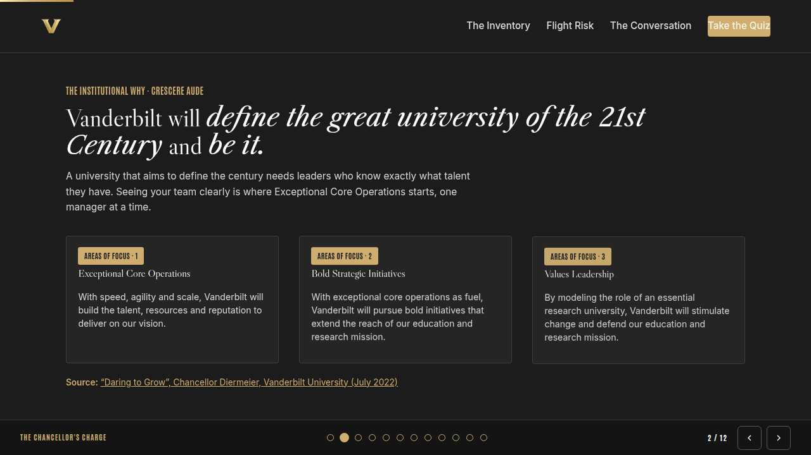
The mission Full 2 min · Core 1
Anchor the session in the Chancellor's charge so the next 40 minutes read as mission work, not admin.
Say
“This year of learning hangs off one sentence from the Chancellor: Vanderbilt will define the great university of the 21st Century and be it. A university that aims to define the century needs leaders who know exactly what talent they have. Seeing your team clearly is where Exceptional Core Operations starts, one manager at a time.”
Do
- Read the mission line slowly, once.
- Point at the tie-in line and let it sit; no discussion needed here.
Transition: “That is the why. Here is the number we are moving.”
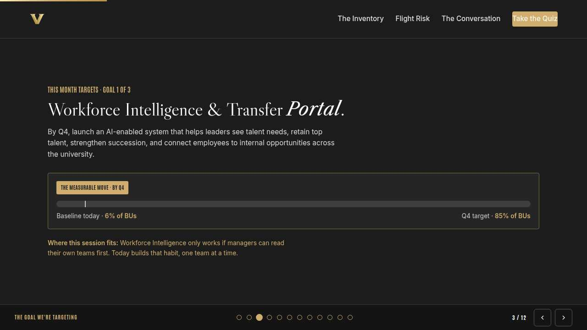
The goal we are targeting Full 2 min · Core 1
Name the enterprise goal this month serves and the measurable move it needs.
Say
“Every month of Anchor's Edge lands on one of three enterprise goals. This month is Goal 1, Workforce Intelligence & Transfer Portal: By Q4, launch an AI-enabled system that helps leaders see talent needs, retain top talent, strengthen succession, and connect employees to internal opportunities across the university. Today's baseline is 6% of BUs; the Q4 target is 85% of BUs. Workforce Intelligence only works if managers can read their own teams first. Today builds that habit, one team at a time.”
Do
- Let the meter animate before you speak to the number.
- One line, not a lecture: this session is one of the moves that closes the gap.
Transition: “Here is what you will be able to do in 45 minutes.”
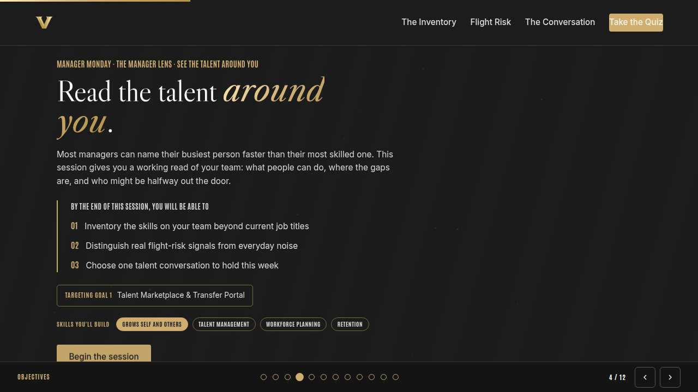
Objectives Full 1 min · Core 1
Set the contract for the session in under a minute.
Say
“By the end of this session: inventory the skills on your team beyond current job titles; distinguish real flight-risk signals from everyday noise; choose one talent conversation to hold this week. That is the whole contract.”
Do
- Read the three objectives briskly; do not elaborate yet.
Transition: “Three stops to get there.”
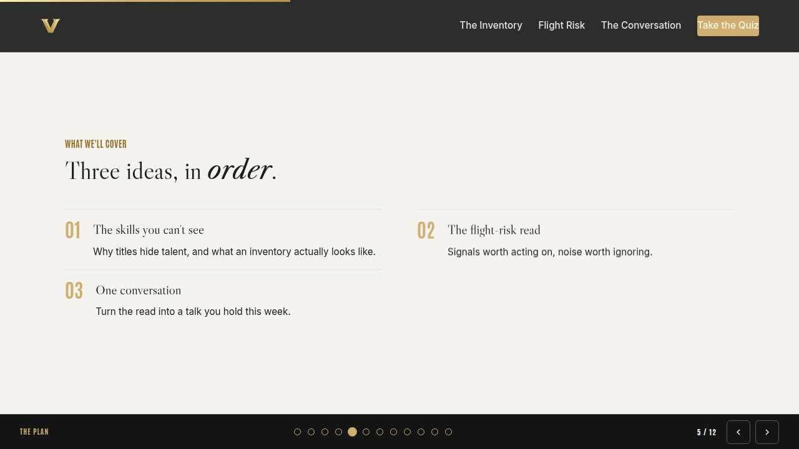
Agenda Full 1 min · Core skip
Show the path so the room can pace itself.
Say
“Three stops: the skills you can't see, the flight-risk read, one conversation. Each one has something to play with, so keep the deck open.”
Do
- Point once at each stop; ten seconds each.
Transition: “Stop one.”
Core path: Core: skip the read-through, gesture at the slide in passing.
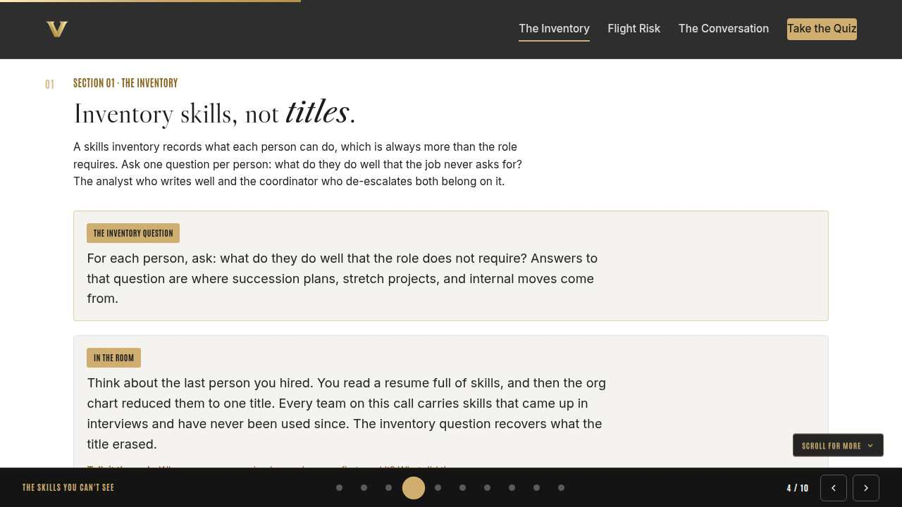
The skills you can't see Full 8 min · Core 6
Install the inventory question: what can each person do beyond what the role requires.
Say
“Here is the uncomfortable truth this month is built on: most of us can describe our team's workload in detail and their skills only vaguely. Titles tell you the job someone was hired for. The talent read starts with what they can actually do, and half of that never shows up in the role.”
Do
- Read the lead once, then go straight to the knowledge check; let everyone answer on their own screen.
- Ask the room which answer they picked before revealing your own take.
- Run the breakout: one hidden skill per person, 90 seconds each way.
Ask
“Think of your own team. Whose hidden skill did you just think of first?”
Expect:
- Usually a story about someone doing something outside their lane
- Sometimes silence, which is itself the point
Respond: If the room goes quiet: that silence is the gap this month closes. If stories flow: notice how fast they came once someone asked.
Debrief: The inventory question costs nothing and most managers have never asked it. That is the whole section.
Watch for: Managers listing job duties instead of skills. Redirect: what could this person do that the job never asks for?
Transition: “Skills are half the read. The other half is knowing who might leave.”
Core path: Core: skip the breakout; ask for one hidden skill in chat instead.
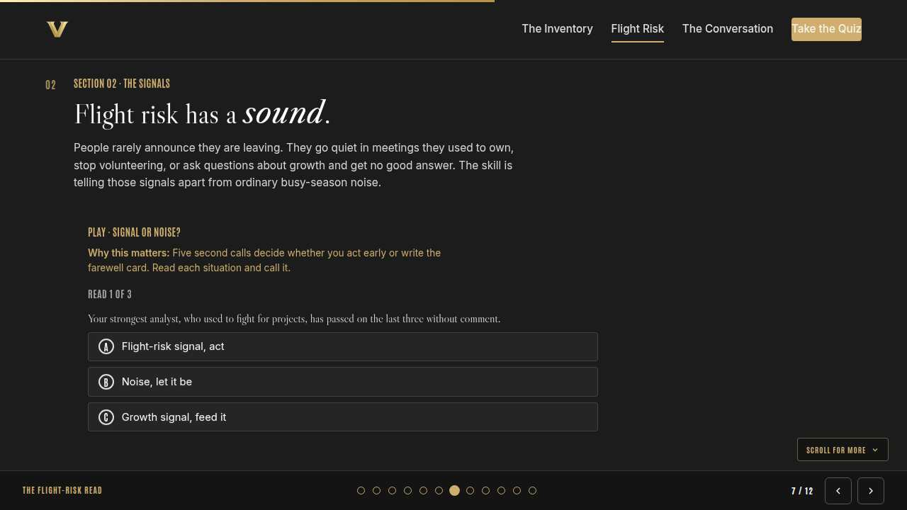
The flight-risk read Full 10 min · Core 7
Teach the difference between actionable flight-risk signals, ordinary noise, and growth asks.
Say
“Nobody resigns out of nowhere. They resign after months of signals that were easy to read as something else. The skill is not surveillance; it is pattern literacy: noticing when ownership behavior changes, and telling that apart from busy-season weather.”
Do
- Run Signal or noise? live; everyone plays on their own screen.
- After round two, pause: ask who called it noise and why. The disagreement is the teaching.
- Run the breakout on the signal they have been calling noise.
Ask
“What makes the growth ask in round three so easy to miss?”
Expect:
- It sounds like a budget question
- It arrives when you are busy
- It is flattering, so it feels safe to postpone
Respond: All true. The reframe: a growth ask is talent telling you the retention lever. Postponing it is declining it.
Debrief: Signals are pattern changes around ownership and growth. Noise is workload weather. When unsure, one light conversation settles it.
Watch for: Anyone treating this as monitoring individuals. Frame stays on patterns you observe in the normal course of managing, never on surveillance.
Transition: “You have the read. Now it has to earn a conversation.”
Core path: Core: run the trainer, skip the breakout, take one voice on the debrief question.
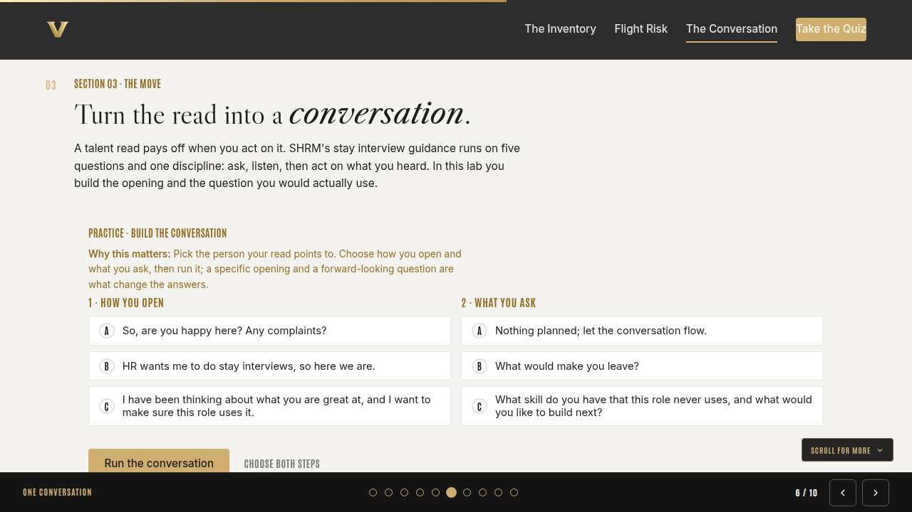
One conversation Full 9 min · Core 6
Convert the read into a specific conversation with a strong opening and one real question.
Say
“A talent read that stays in your head is trivia. It becomes retention the moment someone hears it. The difference between a box-checking stay interview and one that actually retains is the opening line and the question, so we are going to build both.”
Do
- Run Build the conversation; give the room two minutes to make both choices and run it.
- Ask one volunteer to read their outcome aloud, weak or strong.
- Point at the pattern: specific opening, forward-looking question.
Ask
“Why does the compliance framing ('HR wants me to do stay interviews') kill the conversation?”
Expect:
- It makes the talk about the process, not the person
- It signals the manager would not be here otherwise
Respond: Right. The same questions land completely differently when the opening proves you noticed them specifically.
Debrief: Strong talent conversations have a shape: I noticed you, here is what I see, what do you want to build next?
Watch for: Managers who want a script. Give the shape, not a script; their own words are the credibility.
Transition: “Quick recap, then you build your own card.”
Core path: Core: everyone runs the builder solo; skip the read-aloud.
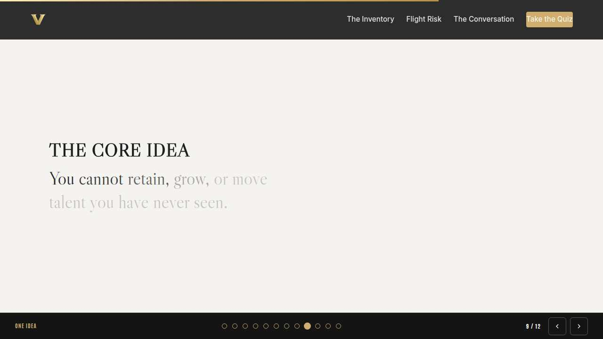
The core idea Full 1 min · Core skip
Land the one sentence the session exists to install.
Say
“If you keep one sentence from today, this is it. Read it once, out loud: You cannot retain, grow, or move talent you have never seen.”
Do
- Pause two beats after reading; the word animation carries it.
Transition: “The recap makes it stick.”
Core path: Core: pass through in stride; the sentence reads itself.
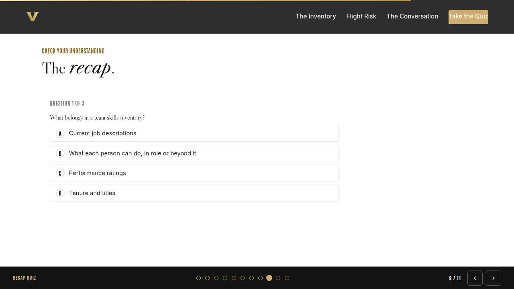
Recap quiz Full 4 min · Core 3
Score the learning while it is fresh; wrong answers are teaching moments, not failures.
Say
“Three questions, on your own screen. Answer honestly; the explanations are where the learning sticks.”
Do
- Give the room 90 seconds to run it individually.
- Ask for a show of results in chat: how many got 3 of 3?
- Read out the explanation for whichever question drew the most misses.
Watch for: Rushing past the why lines. The explanations carry the teaching.
Transition: “Now point it at your real week.”
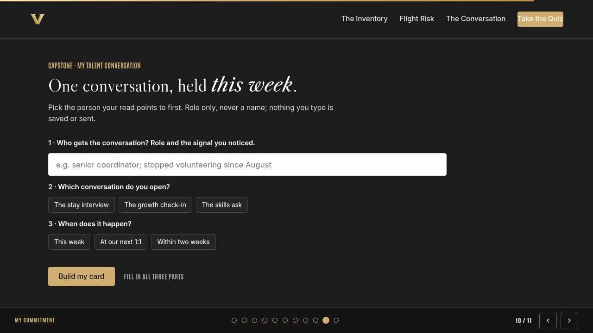
Capstone commitment Full 4 min · Core 3
Convert the session into one named, dated action per person.
Say
“Now make it real. One person your read points to, role only. Pick the conversation, pick the window, build the card, and copy it somewhere you will see it before Friday. Two minutes, quiet, go.”
Do
- Two quiet minutes; everyone builds their own card.
- Invite two or three volunteers to read their card aloud or paste it in chat.
- Remind: copy the card somewhere you will see it this week.
Watch for: Vague entries. Nudge for a name-able situation and a real date.
Transition: “Last slide.”
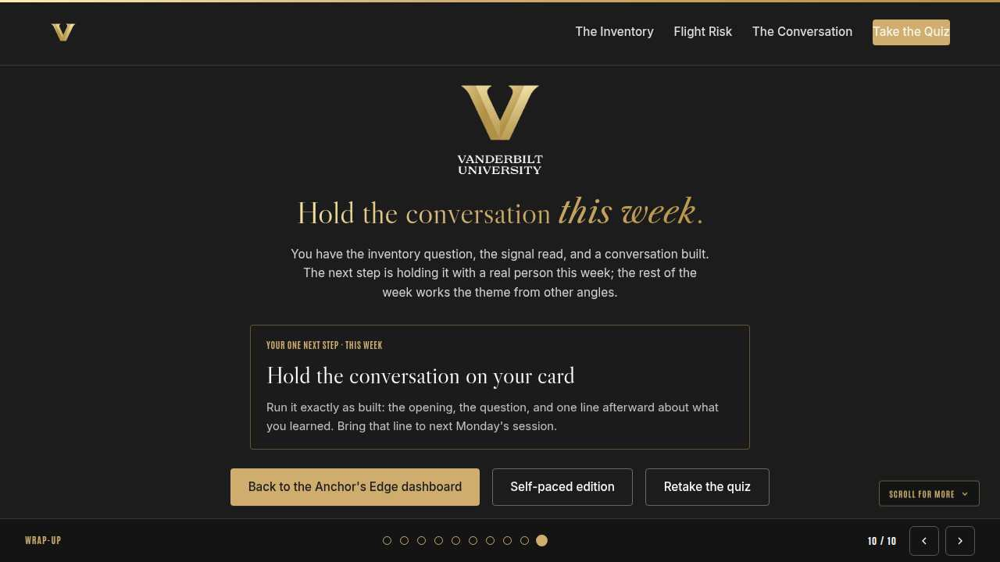
Closing Full 1 min · Core 1
End with the next step and where this thread continues.
Say
“You leave with a read and a conversation. Hold it this week; bring what you learned to next Monday. Tomorrow's Take-Off Tuesday shows you the Workforce Intelligence tool side of the same picture, and Thursday's session sharpens the curiosity that makes these conversations work.”
Do
- Point at the next-step card; one sentence.
- Name the rest of the week's rhythm: the other sessions echo this month's theme.
Generated from facilitator/notes.json. The on-screen facilitator edition lives at ./ alongside this guide.